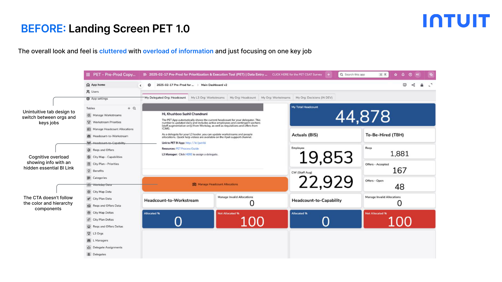
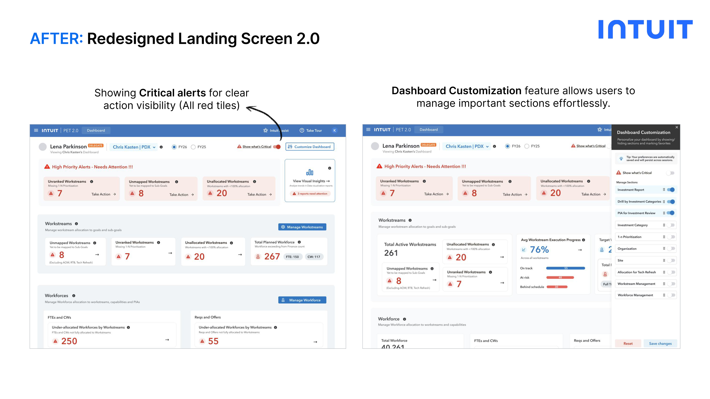
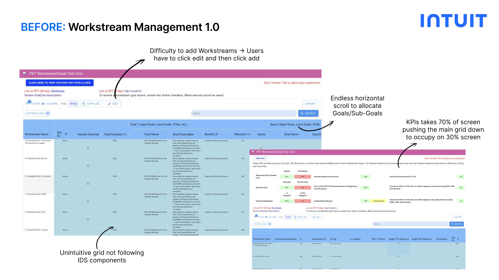
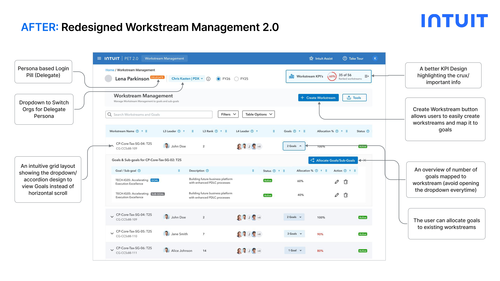
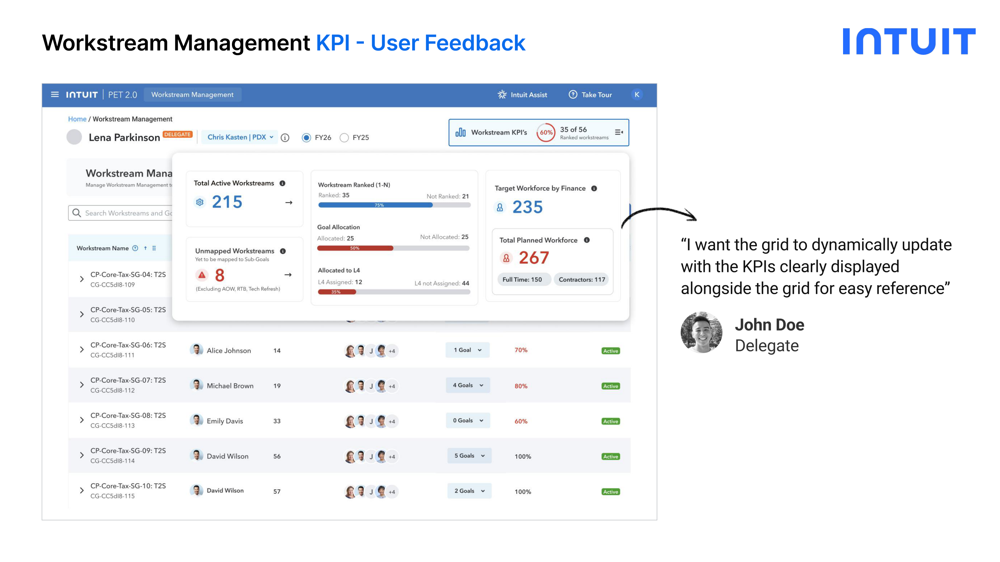
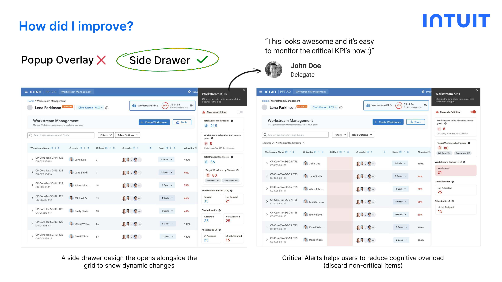
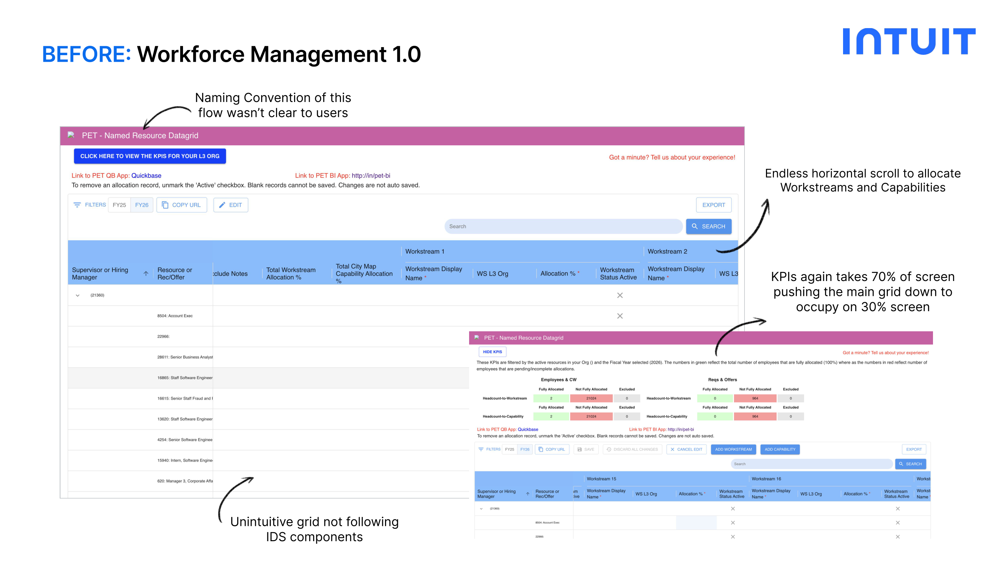
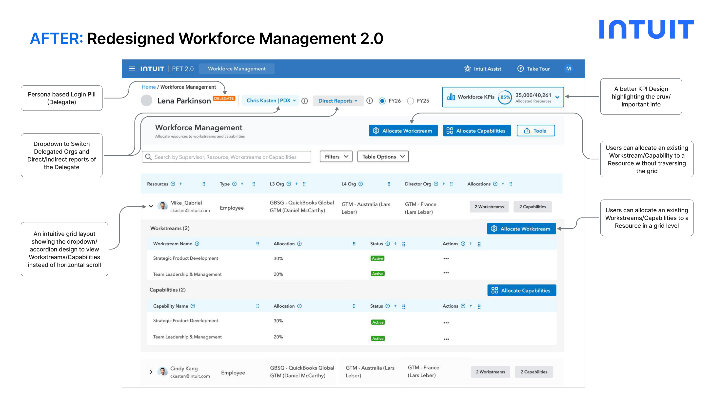
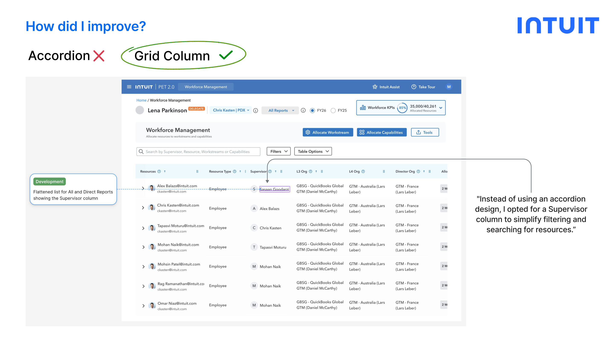

This project is covered under NDA. Please enter the password to view the full case study.
Don't have the password? Request access
A research-led redesign of Intuit's internal PET platform: transforming fragmented workflows into a cohesive, persona-driven experience for resource planning, workstream management, and strategic prioritization.
A research-led approach to map journeys, design workflows, and iterate quickly toward a more intuitive PET 2.0.
Measured through System Usability Score tests, follow-up interviews, and adoption tracking across user groups.
Each persona has different needs, different key jobs, and very different mental models. A one-size-fits-all approach was a core failure of PET 1.0.
Users across all levels: from Delegates to ICs: reported that PET 1.0's workflows were cumbersome, unintuitive, and difficult to scale.
My UX strategy focuses on reducing cognitive load and creating a predictable, aligned system for all personas.




After initial testing, a user needed the KPIs to be visible alongside the grid dynamically. I iterated from a Popup Overlay to a Side Drawer that opens next to the grid.




Engineering flagged that the accordion pattern for searching Supervisor/Resources added friction. I pivoted to a Supervisor column to simplify filtering.

Planned features in the PET 2.0 roadmap, already in early design exploration.
Let's talk about design, internal tools, or your next product challenge.